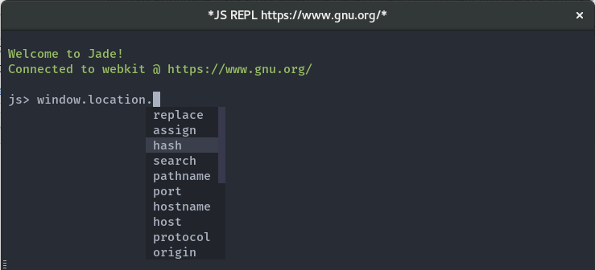

Next: Table of contents, Up: (dir) [Contents]
Indium 0.5.0, May 12, 2017
Nicolas Petton
Copyright © 2017, Nicolas Petton
Indium is a JavaScript development environment for Emacs1.
Indium is Free Software, licensed under the GPL v3.0. You can follow its development on GitHub2.
Indium connects to a browser tab or nodejs process and provides several features for JavaScript development, including:
M-x indium-scratch);
indium-interaction-mode;
edebug, or cider.
This documentation can be read online at ‘https://indium.readthedocs.io’.
It is also available in Info format and can be consulted from within Emacs with
C-h i m indium RET.
| • Table of contents: | ||
| • Indices and tables: | ||
— The Detailed Node Listing — Table of contents | ||
|---|---|---|
| • Installation: | ||
| • Getting up and running: | ||
| • The REPL: | ||
| • Interaction in JS buffers: | ||
| • The stepping debugger: | ||
| • The inspector: | ||
| • Network: | ||
Installation | ||
| • Using MELPA: | ||
| • Manual installation: | ||
Getting up and running | ||
| • NodeJS: | ||
| • Chrome/Chromium: | ||
| • Using local files when debugging: | ||
The REPL | ||
| • Starting a REPL: | ||
| • Using the REPL: | ||
| • Code evaluation & context: | ||
Using the REPL | ||
| • Keybindings: | ||
| • Reconnecting from the REPL buffer: | ||
Interaction in JS buffers | ||
| • Evaluating and inspecting: | ||
| • Switching to the REPL buffer: | ||
| • Adding and removing breakpoints: | ||
| • Live code update (hot-swapping JavaScript sources): | ||
The inspector | ||
| • Using the inspector: | ||
Next: Indices and tables, Previous: Top, Up: Top [Contents]
| • Installation: | ||
| • Getting up and running: | ||
| • The REPL: | ||
| • Interaction in JS buffers: | ||
| • The stepping debugger: | ||
| • The inspector: | ||
| • Network: | ||
Next: Getting up and running, Up: Table of contents [Contents]
|
Indium supports Emacs 25.1+, Chrome 54.0+ (debugging protocol v1.2)
and NodeJS 7+.
Indium is availabe on MELPA3, MELPA Stable4.
| • Using MELPA: | ||
| • Manual installation: | ||
Next: Manual installation, Up: Installation [Contents]
Unless you are already using MELPA, you will have to setup package.el to use
MELPA or MELPA Stable repositories. You can follow this documentation5.
You can install Indium with the following command:
M-x package-install [RET] indium [RET]
or by adding this bit of Emacs Lisp code to your Emacs initialization file
(.emacs or init.el):
(unless (package-installed-p 'indium) (package-install 'indium))
If the installation doesn’t work try refreshing the package list:
M-x package-refresh-contents [RET]
Previous: Using MELPA, Up: Installation [Contents]
If you want to install Indium manually, make sure to install websocket.el.
Obtain the code of Indium from the repository6.
Add the following to your Emacs configuration:
;; load Indium from its source code (add-to-list 'load-path "~/projects/indium") (require 'indium)
Next: The REPL, Previous: Installation, Up: Table of contents [Contents]
| • NodeJS: | ||
| • Chrome/Chromium: | ||
| • Using local files when debugging: | ||
Next: Chrome/Chromium, Up: Getting up and running [Contents]
Nodejs >= 7.0 is required for Indium to work.
Start a node process with the --inspect flag:
node --inspect myfile.js
If you wish to break on the first line of the application code, start node using:
node --inspect --debug-brk myfile.js
Node will tell you to open an URL in Chrome:
chrome-devtools://inspector.html?...&ws=127.0.0.1:PORT/PATH
Evaluate M-x indium-connect-to-nodejs RET 127.0.0.1 RET PORT RET PATH,
PORT and PATH are the ones from the ws parameter of the above URL.
Connecting Indium to the node process will open a debugger on the first line of
the application code if you passed the CLI argument --debug-brk.
Next: Using local files when debugging, Previous: NodeJS, Up: Getting up and running [Contents]
Chrome/Chromium >= 54.0 is required for Indium to properly work (debugging
protocol v1.2).
Start Chrome/Chromium with the --remote-debugging-port flag like the following:
chromium --remote-debugging-port=9222 https://localhost:3000
Make sure that no instance of Chrome is already running, otherwise Chrome will
simply open a new tab on the existing Chrome instance, and the
remote-debugging-port will not be set.
To connect to a tab, run from Emacs:
M-x indium-connect-to-chrome
Previous: Chrome/Chromium, Up: Getting up and running [Contents]
Indium can use local files when debugging, or to set breakpoints.
|
If the Chrome connection uses the http:// or https:// protocol, you will
have to tell Indium where to find the corresponding JavaScript files on disk by
setting up a workspace.
To do that, place an empty .indium marker file in the root folder where your
`web server serves static files'.
The root folder where the .indium file should be put is not always the
directory that contains your JavaScript files. It should be the root folder
containing static files. Most of the time, it is at least one level above.
Given the following project structure:
project/ (current directory)
www/
index.html
css/
style.css
js/
app.js
.indium
Indium will lookup the file www/js/app.js for the URL
"‘http://localhost:3000/js/app.js’".
|
Next: Interaction in JS buffers, Previous: Getting up and running, Up: Table of contents [Contents]
| • Starting a REPL: | ||
| • Using the REPL: | ||
| • Code evaluation & context: | ||
Next: Using the REPL, Up: The REPL [Contents]
A REPL (Read Eval Print Loop) buffer is automatically open when a new Indium connection is made (see Getting up and running).
The REPL offers the following features:
company-mode

Next: Code evaluation & context, Previous: Starting a REPL, Up: The REPL [Contents]
| • Keybindings: | ||
| • Reconnecting from the REPL buffer: | ||
Next: Reconnecting from the REPL buffer, Up: Using the REPL [Contents]
Here is the list of available keybindings in a REPL buffer:
| Keybinding | Description |
|---|---|
RET | Evalute the current input. When the point is on a printed object, inspect the object. |
C-RET | Insert a newline. |
C-c M-i | Evalute the current input and open an inspector on the result. |
C-c C-o | Clear the output. |
C-c C-q | Kill the REPL buffer and close the current connection. |
M-n | Insert the previous input in the history. |
M-p | Instert the next input in the history. |
Previous: Keybindings, Up: Using the REPL [Contents]
When a connection is closed (most probably because other devtools were open on the same runtime), the REPL will display two buttons, one to try to reopen the connection, and another one to kill Emacs buffers using this connection (the REPL buffer, inspectors & debuggers).
Previous: Using the REPL, Up: The REPL [Contents]
When evaluating code in the REPL, Indium will always run the code on the current execution context.
This means that while debugging, code execution will happen in the context of the current stack frame, and will be able to access local variables from the stack, etc.
Next: The stepping debugger, Previous: The REPL, Up: Table of contents [Contents]
Indium comes with a minor mode called indium-interaction-mode for interactive
programming. To enable it in all JavaScript buffers, add something
like the following to your Emacs configuration:
(require 'indium) (add-hook 'js-mode-hook #'indium-interaction-mode)
When indium-interaction-mode is on, you can evaluate code, inspect objects and
add or remove breakpoints from your buffers.
| • Evaluating and inspecting: | ||
| • Switching to the REPL buffer: | ||
| • Adding and removing breakpoints: | ||
| • Live code update (hot-swapping JavaScript sources): | ||
Here’s a list of available keybindings:
C-x C-e: Evaluate the JavaScript expression preceding the point.
C-M-x: Evaluate the innermost function enclosing the point.
C-c M-i: Inspect the result of the evaluation of an expression (see
The inspector).
M-x indium-eval-buffer: Evaluate the entire buffer.
Next: Adding and removing breakpoints, Previous: Evaluating and inspecting, Up: Interaction in JS buffers [Contents]
Press C-c C-z from any buffer with indium-interaction-mode turned on to
switch back to the REPL buffer (see The REPL).
Next: Live code update hot-swapping JavaScript sources, Previous: Switching to the REPL buffer, Up: Interaction in JS buffers [Contents]
You need to first make sure that Indium is set up correctly to use local files (see Using local files when debugging).
C-c b b: Toggle a breakpoint
C-u C-c b b: Toggle a breakpoint with condition
C-c b K: Remove all breakpoints from the current buffer
Once a breakpoint is set, execution will stop when a breakpoint is hit, and the Indium debugger pops up (see The stepping debugger).
|
Previous: Adding and removing breakpoints, Up: Interaction in JS buffers [Contents]
Indium supports live code updates without the need to reload the browser tab or restart the nodejs process.
This feature works with by hot-swapping the script source, and works even with lexical closures.
|
|
To enable live updates, make sure Indium is set up to use local files (see Using local files when debugging).
C-c C-k: Updates the runtime JavaScript source with the contents of the
current buffer.
(setq indium-update-script-on-save t): Automatically update the runtime
script JavaScript source after each buffer save.
Next: The inspector, Previous: Interaction in JS buffers, Up: Table of contents [Contents]
Next: Network, Previous: The stepping debugger, Up: Table of contents [Contents]
Indium features an object inspector that can be open on any object reference from a REPL buffer (see The REPL), the debugger (see The stepping debugger), or the result of any evaluation of JavaScript code (see Interaction in JS buffers).
To inspect the result of the evaluation of an expression, press C-c M-i. An
inspector buffer will pop up. You can also press RET or left click on
object links from the REPL buffer.

| • Using the inspector: | ||
Up: The inspector [Contents]
Here is a list of available keybindings in an inspector buffer:
| Keybinding | Description |
|---|---|
RET | Follow a link to inspect the object at point |
l | Pop to the previous inspected object |
g | Update the inspector buffer |
n or TAB | Jump to the next object in the inspector |
p or s-TAB | Jump to the previous object in the inspector |
Previous: The inspector, Up: Table of contents [Contents]
M-x indium-webkit-disable-cache M-x indium-webkit-enable-cache
Both commands save your choice which will be applied on next indium launch for a current session.
(setq indium-webkit-cache-disabled t)
Previous: Table of contents, Up: Top [Contents]
http://gnu.org/software/emacs
https://github.com/NicolasPetton/indium
https://melpa.org
https://stable.melpa/org
https://melpa.org/#/getting-started
https://github.com/NicolasPetton/indium